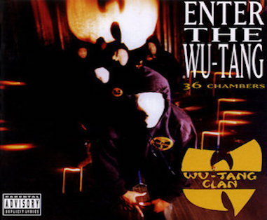
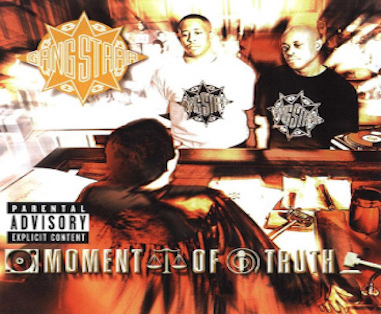
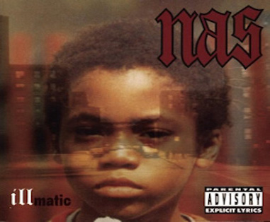
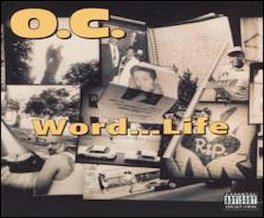
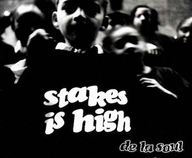
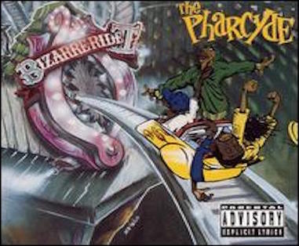
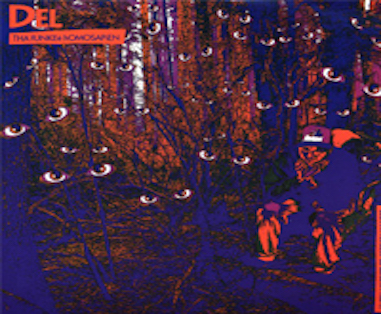
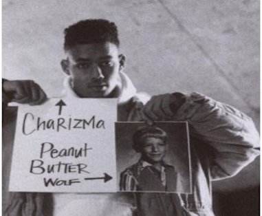
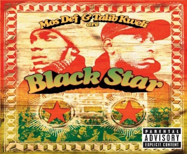
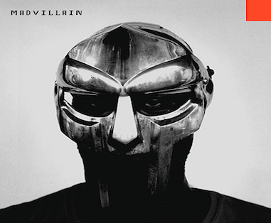

My Favorite HIP HOP albums of all time
Here is my list of my personal favorite HIP HOP albums of all time.
Back in the days, I listen these albums literally at least hundred times and couldn't help rapping myself because the beat, rhymes, and lyrcis are great.1
Most of my favorite HIP HOP album are 90's. Now 2016, those album are still my favorite of all time. I guess those great albums comes once in a lifetime.
Those came out so called Golden age hip hop. These are absolute classic and a must listen for any hip-hop fan's. These are one of those rare albums that you can listen to over and over for years to come and never get tired of any of the songs.
Without further due, here are my favortie lists.
Wu-Tang-Clan-Enter the Wu-Tang (36 Chambers) (1993)

This album literally a kid from suburb can makes sense and smell and taste what is like
RZA, GZA/Genius, Ol Dirty Bastard, Inspektah Deck (Rebel INS), Masta Killa, Ghostface Killah, Method Man, U-God & Raekwon had been thorugh in NY. I love putting this record on and thinking back to college days in Olympia Washington rapping along to C.R.E.A.M. with the friends at
KAOS Community Radio – 89.3 FM Olympia. My friend, Ty who introdued Wu-Tang-Clan for me, he raps really goond and makes all beats by himself. Whenever listen to Wu-Tang-Clan, I remember Ty Demura. You can listen to my frind, Ty Demura rapping through
his soundcloud.
Gang Starr-Moment of Truth (1998)

Gangstarr will forever bring classics to the hip-hop's underground table, but MOMENT OF TRUTH is their best work yet. The title of the album MOMENT OF TRUTH says it all. Guru is tired of worthless rappers and commercialized hip hop that not real hip hop any means. Its really sad true talent is only noticed by the real hip-hop heads in this commercial driven industry. If only more people would open their minds and see that real hip-hop is not who has the most money, or who is pushin the nicest car. Hip-hop is about the words and the attitude that are spit into microphone. SIMPLY REMARKABLE NO OTHER emcee COMES CLOSE....
Nas-illmatic (1994)

When it comes to Nas, he is the best lyricist EVER. The level of the metapher he described street of NY is high as f**k. I can't even count how many time I repeated my favorite track "Memory Lane" and try to memorize, a feeling of nostalgia that is unmatched by any other.Nas is an emcee's emcee. His fluid flow is nothing less than addictive ear candy for yours truly.
O.C.-Word...Life (1993)

Men,Wish I would've been up on this as a youngster!!!! I'v met Dex at the BBQ party in the summer Tokyo and we talked about hip hop stuff and turns out he has own
mixtape show hip-hop podcast. Until I listen to them, I did not know he had interviewed O.C.!!!!!! Listen
here.
De La Soul-Stakes Is High (1996)

I guess for De La Soul's fun, it's hard to pick which is your favorite album over 3 Feet High & Rising (1989), De La Soul is dead (1991) Buhloone Mind State (1993) and Stakes Is High (1996) but if I have to choose I pick this album. Like Sequels that sucks so many second and third albums are not even close to first album. Unlike them De La Soul is the EXCEPTION. I guess "Stake is High (1996) is the most overlooked hip hop album of all time.
Pharcyde-Bizarre Ride II the Pharcyde (1992)

If you listened to the Pharcyde recently and never heard of them before, you'd swear they were new. When I first heard this album it was just so different from everyone else like these guys were just having fun, and these guys were talking about a world that youngsters had only heard about.The feeling you get from Bizarre Ride II is similar to that off a bottle of chilled water on a summer's day in Los Angeles.
Del the Funky Homosapien-I Wish My Brother George Was Here (1991)

I'm glad I find this masterpiece. Del is the cousin to Ice Cube, but the two are quite dissimilar. Ice Cube helped to popularize west coast gangsta rap, while Del was laying the groundwork for California Bay-area's up-and-coming underground rap scene. My favorite truck is "Sunny Meadowz" and "The Wacky World of Rapid Transit".You can listen to
I Wish My Brother George Was Here.
Charizma & Peanut Butter Wolf-Big Shots (2003)

Bay Area MC Charizma and his crate-diggin' pal Peanut Butter Wolf entered the game in rap's blissful Golden Age. Due to label drama and Charizma's tragic 1993 passing, most of their work was vaulted - until 2003. Big Shots unveils classic one-two sonic jabs from a duo whose affinity for hip-hop should make Common proud. The tracks are unearthed in time-capsule fashion (nothing much altered) with 15 first-class jams serving as an ideal early-'90s hip-hop snapshot.Big Shots is a golden ticket to when it was all so simple.
BlackStar-Mos Def & Talib Kweli Are Black Star (1998)

My favorite track is "Thieves In The Night". The
lyrics is just intelligence, and genious.
Madvillain-Madvillainy (2004)

MF Doom and Madlib have delivered an undisputed classic. You gatta listen to this whole album. Period.